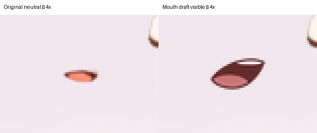
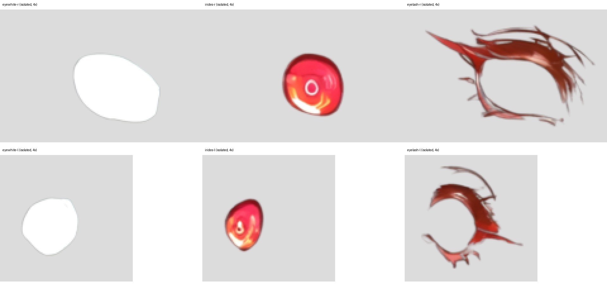

Continuation after upper-body-only scope confirmation
Partial draft — no rigging or importA copy of the PSD now has one hidden, low-confidence mouth-interior draft. Its neutral composite matches the original exactly. Separate eyelids, finished blink artwork, the arm split, and hidden coverage have not been completed. The model is not yet rigged.
| Phase | Result |
|---|---|
| 1 · Inspect | Source hash verified; original layer inventory and composite were checked. Grok CLI inspected the live StandRig context and confirmed 0 bindings and 0 deformers. |
| 2 · Artwork | One hidden generated mouth draft added to a PSD copy. Two closed-eye concept candidates were inspected and rejected as production layers. Other artwork remains incomplete. |
| 3 · Verify | For the one added draft only: original decoded layer pixels, bounds, visibility and order match; neutral RGBA max and mean difference are 0. New name is unique, non-empty and within the canvas. |
| 4 · Import | Not performed. StandRig's installed MCP has no PSD-import tool; PSD parsing is performed in its browser UI. No browser automation tool was available in this session. Per the requested hard stop, manual UI import is needed after the artwork has been reviewed. |
| 5 · Targets | Not started; previous generated concepts are not actual model poses. |
| 6 · Rig | Not started. No saved StandRig write or animated pose was made. |
| 7 · Report | This report records completed and incomplete work. |

The right panel is a hypothetical revealed draft with the original mouth hidden. It is not a StandRig animation render. Teeth, tongue, open shape and position are guesses because they are not visible in the source. The generated mouth is visually larger and darker; an artist should review or redraw it before speech rigging.
Draft bounding box: (816, 412, 844, 428); the original mouth is (820, 415, 841, 426). The new layer is above the face and below the mouth, hidden at neutral.
Mean RGB of draft pixels with alpha > 128: (133.7, 73.4, 73.7); source mouth: (204.2, 134.9, 120.2). Euclidean distance between those means: 104.45 RGB units. This comparison does not establish mismatch or match because a cavity and a closed mouth are different materials; the generated colors were not sampled from the source and require review.

Both eyes have separate white and iris shapes. Their exact usable coverage under movement still needs testing. There are no separate closed lids. The generated closed-eye lines did not match the existing lashes and were not inserted: large-eye concept · far-eye concept.
Built-in image generation was used with the existing Ciel image as reference. The mouth prompt asked for an isolated transparent, small three-quarter-view anime mouth interior with a maroon cavity, thin tooth sliver and muted tongue, without skin, glow or text. The two eye prompts asked for isolated closed eyelid lines matching the large and smaller original eyelash layers. All generated facial geometry is inferred. The mouth was cropped and scaled to the canvas; eye concepts were not inserted.
Source SHA-256: f19e8c7d2187913de7cf1633d1a88ff7d6153d09ea8a1322527f111e3db53279
Partial v2 SHA-256: 138d37981c90270ad36f7d78275a4962b92ca4f44a08eeeb5261682a3982ed91
Unchanged StandRig revision: rig-sha256-dc3b020ef5c985666d7ef9b02528d0a30cab66809774d9d9c36bfe7dc3d8139a
Existing checkpoint from prior run: 988af116-5999-4493-9caa-d99f52ac08d6. No checkpoint was created in this continuation.